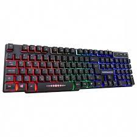
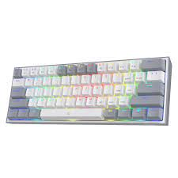
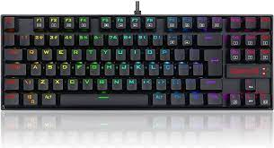

Melhores teclados de entrada custo-benefício
Redragon fizz k617
Apesar de que, o switch dos modelos mais baratos da
marca redragon, não serem da melhor qualidade, por
conta do tempo de vida, ele vale muito a pena
Redragon Kumara
Tem o mesmo problema dos switch, mas pra quem quer
as "setinhas" no teclado, é uma opção melhor
São os únicos que eu conheço, mas sim, por enquanto sou baba ovo da redragon, mas o motivo é que até hoje só comprei periférico deles